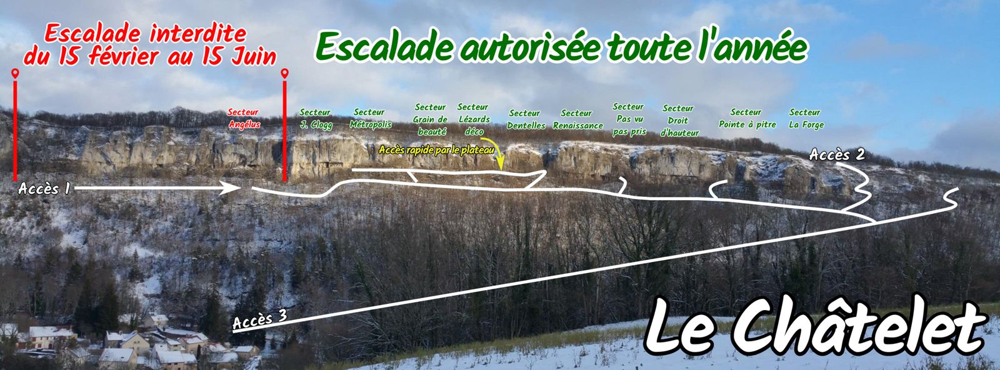

Le Châtelet
La falaise du Châtelet se situe dans le prolongement sud de la falaise de Bouilland, elle surplombe le hameau de La Forge.
Attention : le secteur « Angélus » est interdit du 15 février au 15 juin (panneaux au pied des voies).
Accès
La falaise dispose de 3 possibilités d'accès :
- Longer le pied des voies de la falaise de Bouilland et atteindre les premières voies du Châtelet par l’extrémité nord du secteur : 13 min depuis le parking jusqu’au secteur « Angélus ».
- Du plateau, suivre le sentier qui part dans la forêt en direction de la Combe à la Vieille. Lorsque l’on sort de cette forêt, descendre par un sentier raide (peu évident à trouver) à l’extrémité sud du secteur : pratique pour grimper dans les secteurs « Pointe à pitre » et « Droit d’hauteur ».
- De la Forge, remonter le sentier en diagonale qui atteint le plateau. Avant celui-ci (après avoir marché pendant environ 8 min et enjambé un gros tronc d’arbre), suivre une sente oblique sur la gauche qui rejoint le pied de la falaise à l’extrémité sud du Châtelet (on rejoint l’arrivée du sentier précédent) : pratique car retour très rapide en descente…
